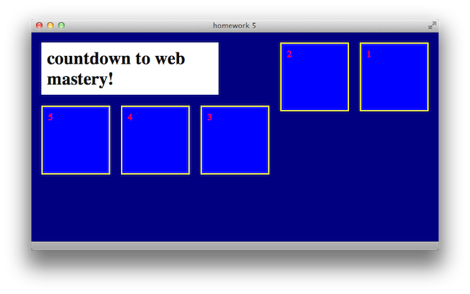

The Box Model
In the previous lesson, we were introduced to CSS as a means of styling your HTML. Specifically, we learned how to make our plain old text more colorful, bordered, and in pretty fonts. The great thing about CSS is that it also lets you position your HTML tags on the page. That’s right—CSS handles layout. For example, you may have previously used multiple <br/> tags to move a paragraph or image further down the page, but now, with CSS, you can place anything pretty much wherever you want.
To understand precise CSS positioning, you gotta understand the Box Model. CSS has two positioning characteristics for each unique HTML element, padding and margin. I’ve drawn up a guide to the box model below, and it centers on a black rectangle—let’s say a paragraph in HTML—defined in CSS to be 600 pixels wide.
Keep this image accessible as you read on. You can open it in a new window or tab if it helps.
{kind=link}
So, to reiterate, the black box represents some content; here, a paragraph of text that we have defined in CSS to be 600 pixels wide. Surrounding the paragraph is a gray-colored area. This is the content’s padding. In CSS, padding is the distance between the content and its border. In this example, I’ve set the padding to be 10 pixels. These means that there is 10 pixels’ worth of padding on each side—top, bottom, left, and right—of the content. Therefore, the distance from the left edge of the padding to the right edge of the padding is 620 pixels: 600 for the content in the middle, and 10 on each side.
The thin yellow line represents the content’s border, which is defined here to be 5 pixels wide. We covered borders in the previous lesson, but it’s worth further explaining here that a border doesn’t necessarily sit on the very edge of your content—remember, there is padding in the way. So with a border 5 pixels wide, the distance from the left edge of the border to the far right edge of the border is 630 pixels: the 620 from last time bordered on each side by 5.
That brings us to the aqua area outside of the border. This is the content’s margin. The margin is the area between one piece of content and the next piece of content (and that second piece of content may have margins of its own). Here, the margin is set to be 10 pixels wide, meaning 10 pixels on all sides of the border. Therefore, the distance from the left edge of the margin to the far right edge of the margin is 650 pixels: the 630 from last time plus 10 each on the left and right.
We started with an HTML element, a paragraph, that we defined to be only 600 pixels wide. Then, we gained 50 pixels in width from these spacing and positioning properties in CSS. That’s the box model: the complete, overall box of space surrounding an HTML element.
Margin and Padding
So now we know that when we say a paragraph is 600 pixels wide, we’re only talking about the inner width of the paragraph element, or the black box in the picture above. So let’s say that we already have this CSS code in place for our paragraphs:
p {
width: 600px;
}
Defining the margin and padding is just as simple as writing a new line of CSS for each property:
p { width: 600px; margin: 10px; padding: 10px; }
For consistency, we can add in our border and background color to match the example above. Very important to note: margins and padding cannot take on separate colors. I just used different colors to set them apart in the diagram above. Padding will take on the same background color as its element (in this case, a paragraph) and the margin will take on the same background color as the surrounding element (just the body in this case).
p { width: 600px; margin: 10px; padding: 10px; border: 5px solid yellow; background-color: black; }
What if, for some reason, you wanted your top and bottom margins to be different than your left and right margins (or the same for padding)? You know, lots of horizontal buffer space, but not a lot of space between one item and the item below it? Lucky you, CSS lets you assign different values to the top/bottom and the left/right. You just add in another value to the property (but with no comma). If there are two values instead of one, CSS will assign the first one to top and bottom, and the second one to left and right.
p {
width: 600px;
padding: 5px 25px;
margin: 1px 5px;
}
Note that margin and padding don’t have to be the same. Pop quiz: now how wide would this paragraph be total? The answer is in a file with your homework answers. And now for a hypothetical question: what if you wanted the spacing to be different for each of the four sides? If you answered, write in four values instead of two, you win! If CSS sees four values, it will assign them in this order: top, right, bottom, left. That’s clockwise from the top, if that’s easier to remember. So let’s get a little crazy!
p {
width: 600px;
padding: 5px 25px 10px 15px;
margin: 1px 2px 3px 4px;
}
Pop quiz part two: what is the total width of this paragraph? Hopefully you didn’t see the answer when you were checking your previous one, because then you would be totally cheating. That’s the basic box model though: content, padding, border, and margin. It’s one of the fundamental things that every CSS designer has to learn, and now you’re one of them.
Display
Something you may have noticed when doing your previous homework is how each paragraph box was automatically placed below the one before it. Even if your browser window was wide enough to fit two of them side by side, it didn’t give them the chance. It booted them onto the next line. This is because they, and all elements in CSS, have a display property that controls how they wrap down the screen.
Display has three main values: block, inline, and none. I’ll describe each, one at a time. Block display is the default display value for most elements. In other words, if you don’t specify otherwise in your CSS, things like paragraphs and headers will always cause the next object to sit below them (like building blocks). This is because when an element is a block, it reserves the rest of the horizontal space in the browser window for itself, even if it doesn’t use it all up. Here’s an example of two paragraphs using a block display:
Clearly, there is room for both of them to fit next to each other on one line. But here is all the CSS used right now for the <p> tags on that HTML page:
p {
width: 40px;
padding: 0;
margin: 10px;
color: black;
background-color: pink;
}
(An aside: if you use zero for any measure, you don’t need to write the units. Because hey, zero of one thing is the same as zero of another thing).
On the other hand, inline display means that the element only uses as much horizontal space as it needs (including padding and margin, remember!), and then the next element can continue after it on the same line. So watch as I only insert one line of CSS, how the web page changes:
p { width: 40px; padding: 0; margin: 10px; color: black; background-color: pink; display: inline; }

See how that one line of code changes everything? Computers are magical! And if you really want magic, here’s how you make something disappear: just add in the display: none; property. This won’t create an empty space where it used to be; it will make the browser think that it was never there in the first place.
Floats
Unfortunately, this section isn’t about ice cream and soda. CSS floats let you push entire elements to the right side or left side of the page. The CSS code is easy, simply write either float: right; or float: left; inside the curly brackets for the element of your choice. When you tell an element to float, it will go as far in that direction as it can. Say you tell an element to float left. If there’s nothing to the left of it, it will hug the left side of the page. If there is something to the left of it (and that something is not in block display) then it will hug the right edge of that element. It’s trying to float towards the left of the screen, but there’s something in the way, so it stops on the right edge of that obstacle.
The same behavior applies to right-floating objects: if nothing’s in the way, they will head all the way to the right edge of the screen. If something is in the way, they will hug the left edge of that something. However, if the floating element is too wide to fit on the same line as the obstacle, it will move down to the next line (and usually be free to float all the way to the edge of the page).
For multiple objects to float next to each other on the same line, they all must be in inline display, so that each one doesn’t boot the next onto its own line. There may come a time, however, when you want all the floating to end. There is a counterpart to the float property, and it is the clear property. You can tell an element to clear left, right, or both. If you clear: left;, for example, it will never obey a float: left; command. And if you clear: both;, it will never obey the floats at all!
Why is this necessary? Say you have an image within a paragraph, and the paragraph is coded to float to the right. But you want your image to stay on the left side of the screen. Since the <img> tag is nested within the <p> tag, the image will follow the same CSS rules as the paragraph unless instructed otherwise. This is very important to remember: an HTML tag within another HTML tag will always apply the same CSS code as its “parent” tag unless new CSS code is specified.
So if your paragraph is set to float: right; and your image tag is within the paragraph tag, you can tell your image to go its own way by typing
clear: right; into the curly brackets for img. The clear property is not used on its own very often, just when you need to reset your floats for something else on the page. And that’s all for this time! Not as bad as the last lesson, I hope.
Key Concepts
- The box model
- Each element has multiple parts to its size: width and height, padding, border, and margin. All four of these parts contribute to an element’s total size on the page.
- Margin is especially used to space multiple elements apart from each other.
- You can assign different values to the top, right, bottom, and left sides of padding and margin, or even top and bottom together and left and right together.
- Display has three properties:
- block, which reserves the rest of the horizontal space on a line for the current element and dumps following elements onto the next line
- inline, which lets following elements start immediately after the current one
- none, which hides the element completely
- Floats send an element as far left or right as they can go, and are cancelled out by clears.
Homework
In the materials download for this lesson, there’s a pre-written HTML file called “homework5.html”. For your assignment, write a stylesheet called “styles5.css” so that when you open the HTML file in your browser, it looks like the screenshot below. You do not need to modify the HTML at all, just the stylesheet. Hint: display and float are probably the most important points to hit. Basic size properties are necessary too. I won’t be too picky about fonts or colors, but make sure that there are different colors for different elements. You may need to play around with the size of your browser’s window to achieve the results exactly like the shot below.
Basically, just play around with floats. When you’re done, compare your CSS file to the one in the Answers folder.
Appendix: Percents
Hello! Here are two little topics that I couldn’t figure out where to put in the lesson. As with anything else in CSS at this point, adding these tools to your arsenal is just refining your skill set. The more you know…
Up until this point, we’ve been labeling sizes in pixels. CSS also allows you to label sizes in percents! So, instead of writing a value like 600px, you can instead write 50%. Percent of what, you may ask? CSS assigns the parent element a value of 100%, and then uses that to measure the relative size of the current element. Usually, your parent element is just going to be the <body> tag, so you can think of 100% as meaning the full height or width of the screen. Although, if you have an image within a paragraph for example, and apply width: 50%; to the image, it will be half as wide as the paragraph. Sound good? Good.
Appendix: Text Align
We learned about floats, which allow you to send entire elements towards the right or left edges of the screen. There is also a text-align property, which works the same way as aligning text does in a word processor. There are four possible values: right, center, left and justify, and they’re pretty self-explanatory. The default is text-align: left; so your paragraphs, headers and all other text will behave this way unless coded otherwise.
One way to use the text-align property in design is to center your elements on the page. This is a bit of trickery that I won’t go into great detail explaining, so I’ll just provide an example of centering a <h1> tag that is 500 pixels wide:
body {
text-align: center;
}
h1 {
width: 500px;
margin: 0 auto;
text-align: left;
}
The text-align: center; in body means that all content in the body is centered. This means that all elements are centered, not just all text. The 0 auto margins in h1 are the trick: auto in CSS means “take up as much space as you can.” Since there are two values in margin, the first applies to the top and bottom, and the second applies to the left and right. Having auto left and right margins basically means that your h1 is kept in the center of the page. The zero can be anything you want, though—for this example, I don’t need any vertical margins. Finally, I want the actual h1 text to be left-aligned, so I redefine it in the last line of CSS.
It’s getting late, so I won’t go into greater detail, but this is a neat little trick to center whole elements on your page using just the text-align property and some clever margins. Play around with this technique (and with percents) on your own time. They’re not necessary to finish the homework.